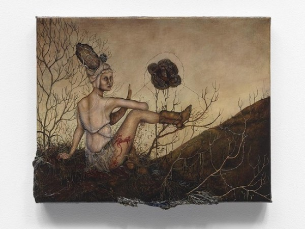
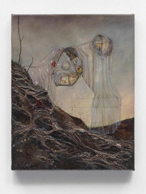
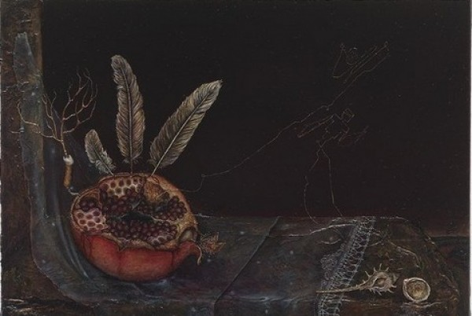

-
Laila Pedro
-
Strange Bliss: Anj Smith at Hauser and Wirth
by Laila Pedro September 13, 2010
When I was a child, a cheap print of the Mona Lisa hung in my father’s studio. Along with Picasso’s The Musicians, it is the first thing I remember staring at for hours. I didn’t pay any attention to the lady or her (insert preferred adjective here) smile until many years later: instead, I was obsessed by that marvelous background. The collapsed perspective – of looming mountains, or craggy, thimble-sized castles, and serpentine roads leading to nowhere, cradling a fantastic, calm sea – looks different in every print I’ve seen.
The occasion for spilling virtual ink on the Mona Lisa is Anj Smith’s Geometry of Bliss, currently at Hauser & Wirth on the Upper East Side. According to the gallery, Smith’s painting, ‘R.’, “depicts a close friend of the artist as a 21st-century Mona Lisa…an enigmatic figure…Neither a woman or a man, R. is instead a person suspended in transition.’ The nominal subject is exquisitely complex, drawn with a kind of old-Masterly care and minute attention to detail, looming large in the Renaissance proportioning of the canvas. The suspension between genders is readily apparent– what, quickly scanned, appear as Rapunzel-like tresses may in fact be sort of Edwardian sideburns. The delicate face is overpowered by a heavy nose, somewhat mashed down the middle like a prizefighter’s. The figure’s arm is almost definitely male– or at least, muscled and hairy as it is, it bears the visual hallmarks of maleness. The gender division is echoed by the human/animal division: what look to be a tiny possum, a squirrel, and something vaguely sloth-like nestle in the figure’s hair, part of an inward-curling spiral that ends near the navel and sucks in every object depictd, including the glowing green sea.
As before, I was utterly captivated by that background, unequivocally apart from and unknowable to the subject, yet inescapably drawn into the structure of the work by Smith’s careful composition. The very specific sea-green (it looks like an amped-up version of the Crayola color) is by far the brightest and, emotionally, the deepest color in the painting; a single moment of openness and vulnerability. Its fragile centrality and essential opacity are highlighted by the object in its center, either an upward-reaching branch, grounded in nothing, or a downward-shooting lightning bolt, stemming from nothing.
Anj Smith’s paintings (the word is inaccurate, or at any rate insufficient: they are sort of more than paintings, or other than paintings, but more on this later), have been described as “extravagantly detailed magic realism” (by the gallery), and as “self-consciously mannered Gothic-Surrealist” (by Martha Schwendener, in the Times). In fact, neither of these convenient catch-all labels, whose ubiquity threatens to render them meaningless, really applies, nor is this kind of grabby academicization really necessary. Smith’s exhibition is a lot of things, but what these portentous phrases are gesturing towards is its most basic quality: a marvelous weirdness permeating her images, their textures, and the somber tonalities of her figures’ delicate physiology.
That said, tentacles of surrealistic expression are everywhere in this work, with differing manifestations. The first of the small-scale renderings, in a gallery almost by itself, is Reconstruction, and it calls to mind Kahlo’s doubled self-portraits, turning the body inside-out and destabilizing its subjectivity. Here, a figure reclines, its pose reminiscent of an Ingres Odalisque. The head of this quasi-feminine figure, crowned with an unsettlingly organic sort of Renaissance bouffant, is vaguely Elizabethan, the dueling references conflating time and genre. This generic, thematic and physical superimposition-by-suggestion happens repeatedly, in various iterations, in almost every work. The referentially-layered, inside-out body is apposed, almost lazily, by a form that repeats throughout the show: a sort of hanging, roundish amalgamation that manages, somehow, to assert itself as a subject. On closer examination, the mass consists of perfectly drawn rats within what appears to be an enclosure of barbed wire. Because of their positioning and the emotional dialogue generated therein, each of these two very different constructs holds its own, confounding what is expected, or even permitted to constitute a subject: animal, human, gender—the divisions are craftily and cannily confused.
Smith’s Evolution in Poetic Language is, in some ways, exactly that. The dual presence of two vague subjects move in a less literal direction than the precise figures of R. or Reconstruction. Here the main figure, suspended luridly from some kind of apocalyptic clothesline in a crepuscular sky, is almost frightening, a face-like orb draped in the gauzy, tattered veil that also appears repeatedly. Composed of pop culture references and arbitrary memories, it evokes a self by shaping its components into the gestures of a face. That “clothesline” attaches it to another, more abstract face, as though the artist is moving further towards abstraction with the creation of each subject. Evolution in Poetic Language is, like the other works, more than a painting, in the sense that it refuses to stay flat. Smith layers paint to such a degree that her linen canvases take on a dimensionality and complexity reminiscent of a coral reef. This sculptural quality, and its highly enameled, almost lacquered, finish, add another level (quite literally) to the engagement with surface, tactility and communication that the relating figures within the show evoke. The works are literally polished, totally finished. The strongest, somehow, are those, like Social Science that dispense with faces and figures entirely. The inscrutable pomegranate, pierced with feathers, and that meme-etic miniature branch/lightning bolt growing out of a crumpled cigarette butt gives the inky blackness of the canvas a compelling emotional intensity. Put another way, Smith’s best is even better when the figures step back and let the colors speak for themselves.
-
Imaging Sculpture: The Orginal Copy at MoMA
by Laila Pedro August 16, 2010
There are areas of the exhibition dedicated to giants of the form, notably Rodin and Brancusi. Curiously, these works seem to be more about explicitly celebrating sculptors than photographers. The photographs of Rodin’s work are astonishing. Though not taken by the sculptor himself they are carefully staged and controlled, framing the light hitting the bodies in a way that seem to breathe an uncanny whiff of life into the bronze figures. Counterintuitively, the mechanical process of photography seems to bring Rodin’s human figures closer to us, to humanize them through some uncanny visual alchemy.
-
Who’s Bad? The Kitsch Pop Surrealism of David LaChapelle
by Laila Pedro July 20, 2010
Once we start down the path of visual referents though, everything becomes tangled—If Michael is the Son and the bird the Holy Spirit, where is the third part of the Trinity, the Father? Is LaChapelle just messing around? Picking references at random? Is the impact of the Sacred Heart and Michael’s figure enough that the image doesn’t need to formalize its symbolism any further? This last option is, I think, the most palatable, because it acknowledges the preeminence of the pop in his photography. The other symbols are used, referenced, and cast aside— while the real power comes from top 40 Radio, not the Old Masters
-
Strange Fruit: Civil Rights and Visual Culture at ICP
by Laila Pedro June 30, 2010
Photos documenting suffering, lynchings, protests, and so on silently and powerfully condemn the abuses; they engage the viewer in an emotional response. In a parallel sense, other visual media can depict, intentionally or not, the same underlying social structures that create injustice. For this reason, this show’s juxtaposition of racist advertisements with direct photographic documentation of actual events effectively illustrates the complex network of imagery operating in the socio-visual history of the civil rights movement.
-
Multiple Transgressions: Eichhorn and Bajevic at TEAM
by Laila Pedro June 24, 2010
The subject’s sex is again blurred out by the glimmering edge, so that even as the viewer’s power is refused, the object protects its autonomy, even, bizarrely and wonderfully, its privacy. In outsourcing the activity of authorship, to customs officials, no less, Eichorn reactivates the implications of this unconsummated desire. Mapplethorpe’s images become poignant, achieving, for a second time, a prescience of the looming AIDS epidemic.
-
Night Fishing at Thierry Goldberg
by Laila Pedro May 26, 2010
This is intelligent, sensitive, multi-layered painting, and it follows itself to its logical conclusion: the painting literally comes out of its frame, tumbling from the severed lines of wood out onto the gallery floor. The use of abstraction leads the painting to the unknowable spaces, where it must, necessarily, transcend the fixed space of painting by literally falling from its frame
-
What Matters Most at Exit Art
by Laila Pedro May 5, 2010
“Political” art, tends, for me, to violate an essential philosophical principle, eloquently articulated by the French literary theorist and poet Édouard Glissant: “dire, sans dire, tout en disant,” “to say, without saying, while saying.” That is to say, the best works of art are allusive rather than explicit; they suggest rather than indicating.
-
{kind=link}
{kind=link}